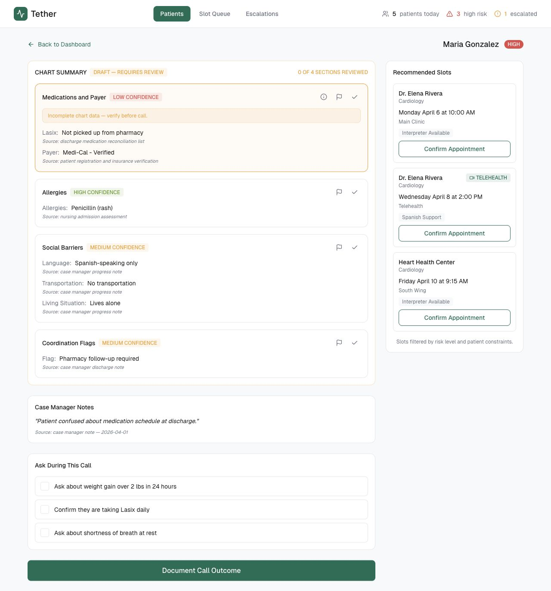
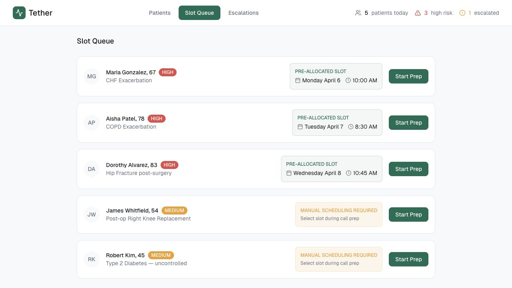
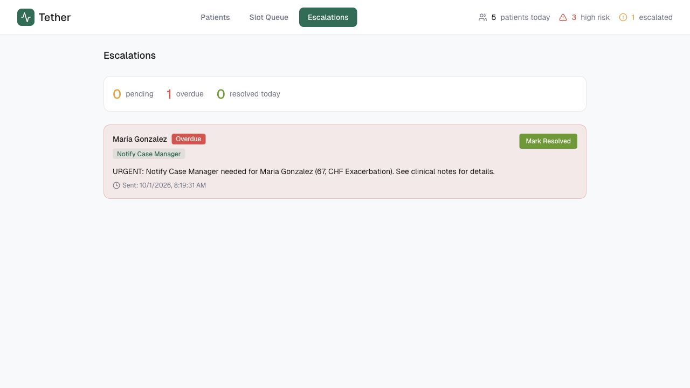

Tether · Personal prototype
A more connected
post-discharge workflow.
Acute-care transition LVNs could spend over an hour tracking down a patient, arranging follow-up, and uncovering discharge gaps. I built Tether to bring preparation, appointments, and escalation tracking into one workflow.
01 / Before the call
Prepare with the gaps in view.
The chart summary brings medications, social barriers, and coordination flags together, with source references and confidence indicators. Draft sections require review, helping the LVN identify what needs verification before speaking with the patient.
Call prompts and recommended appointment slots keep the next steps alongside the preparation.

02 / Coordinate follow-up
Make scheduling needs visible.
The slot queue distinguishes patients with pre-allocated appointments from those who still need manual scheduling. The LVN can enter call preparation directly from the queue, keeping appointment coordination connected to the patient’s follow-up.
A shared view of what is ready and what still needs action.

03 / Track unresolved issues
Keep escalations in view.
The escalation queue surfaces pending and overdue items, the requested action, and when it was raised. A resolution control gives the team a place to track whether an issue has been addressed.
The feedback loop to inpatient teams is a planned extension.
